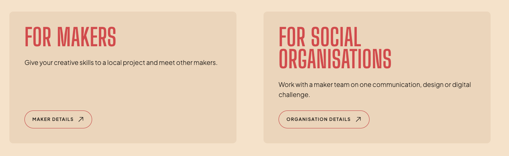
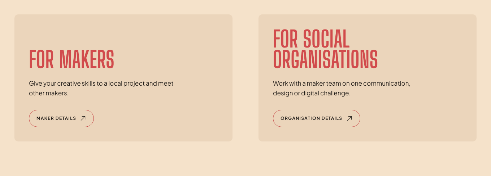

Give the two routes a shared rhythm.
The card bottoms line up. Their contents don't. A shared heading row and a consistent paragraph width would make the pair feel more deliberate.
Selected and implemented: A. Align the heading bottoms, then align the copy and actions. Keep the existing words.
Your screenshot and the diagnosis

The heading height shifts the copy.The shorter maker heading leaves its paragraph about one heading line higher. Bottom-aligned buttons then leave a much larger gap under that paragraph. [1, 2]
The text blocks need a common measure.The left description fits one line in your screenshot; the right takes two. I would cap both at 34ch and let each end naturally. Equal line counts are unnecessary. [1, 3]
A · Shared baselines Recommended
Keep the natural heading breaks. Align both headings at their bottom edge, then start the descriptions on the same line. The short heading moves down, so the gap between each heading and its description stays identical.
Why I'd choose thisBoth routes have the same rhythm. The longer name keeps its full size and the descriptions become easier to compare.
The tradeoffThere is intentional space above “For makers”. That space is cleaner than a large gap between its title and description.
How it would work
Use three shared grid rows for headings, descriptions and actions, with each article spanning those rows through subgrid. Align headings to the end of their row. Limit descriptions to 34ch. Keep the 24px heading-to-copy gap and a 32px minimum before the actions. Stack below 860px and remove the shared-row spacing. This earlier stacking point is a proposal; the current pair stacks at 640px. [2, 3]
B · Two-line titles
Give each heading an intentional two-line composition: “For / makers” and “For social / organisations”. Now both titles start and finish together, while the descriptions use the same 34ch measure as A.
Choose this for a stronger poster rhythmBoth blocks have the same silhouette. The full audience labels and their relative importance stay intact.
The tradeoff“For” gets a line to itself on the maker card. It is more composed, but less natural than A. On stacked cards that extra break is released.
C · Horizontal rows
Let the two audience routes follow each other. Put each title, description and action in matching columns. Fine rules replace the tinted cards, and the headings become a little smaller.
Choose this for a quieter sectionEach title belongs to its own row. Different line counts feel ordinary, and the descriptions share a consistent column.
The tradeoffThe section takes a different shape and loses the paired invitations. It is the largest layout change of the three.
Implemented A on the running homepage

Running-product screenshot. Verified at 1440, 1200, 900, 860, 768 and 390px. Original copy retained.
Evidence and scope
The diagnosis is based on your screenshot and the current source. The recommendations and mockups are design interpretations, not an approved implementation.
- [1] Supplied screenshot, reproduced above without alteration.
- [2]
resources/views/home.blade.php:28contains the audience labels, descriptions and actions.resources/css/app.css:19defines the homepage heading size, 17ch heading limit and 24px margin.resources/css/app.css:488defines the pair, card treatment and bottom-anchored actions. - [3]
resources/css/public-typography.css:14defines reading text as 17px / 1.6, weight 300.resources/css/tokens.cssandresources/css/fonts.csssupply the colours and local fonts used here. The 34ch paragraph limit is proposed.
Design source: the project's existing design system, Lavish source 2. The overview and previews use Big Shoulders Display, Plus Jakarta Sans, the current cream/red palette and pill treatment. Layout A was selected through this review and is now implemented. Copy alternatives remain unselected.